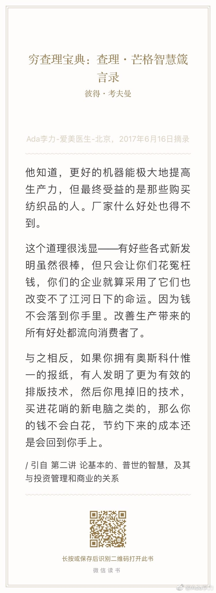
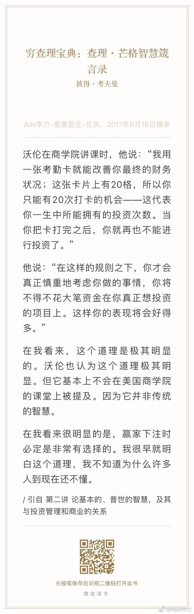
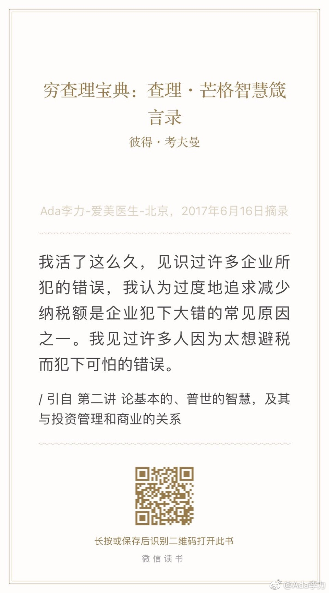

#创业#一直以来是靠脑子来生存，甚至自己不开心，我也要用脑子追问下：为什么会不开心呢？很多时候没有答案。后来读到一段话，大意是过于重视头脑，重视逻辑，重视理性的话，身体的很多本能会退化。举例来说，我每日只要睡个好觉，三餐正常，还能抽出三十分钟健个身，这一天都精神满满，心情不错。这种情况下，脑子不可能告诉你原因。你要做的，就是把自己的身体照料好。不开心？通常睡一觉后就好了。
#创业#有份两万金额的合同，厂家加了条我们看起来很可笑的条款，如果找律师来审合同，这类词句绝对不会出现在合同里。但我们还是原样签了，法律在规避风险的作用更大些。评估下这两者：请律师审合同的费用/合同会造成的风险损失。我觉得不请律师更划算些。
#读书# 我是新技术的拥趸，几乎是不加识别地热烈拥护那些能提升效率的新技术。但是，《穷查理宝典》里面这段话让我重新审视下自己的观点。对于已在充分竞争的行业（非垄断）里的商家来说，新技术是个悲惨的事情，搞不定你就莫名其妙地被不知名小子干掉了。因为对方比你提前掌握了新技术，而且还没你的旧包袱。如果是垄断企业，对新技术则会是另一个态度，采用新技术能更好地巩固垄断地位，以及获得更多利润。不过，现实情况往往是，垄断企业不思进取。
#读书# 这段耐心等待赢率高机会的道理，我在《股票作手回忆录》里也看到过，说得更通俗：“赚大钱，就是静静地等着钱躺到你面前时，去把它捡起来”但是股票作手最终的结果还是破产和穷困潦倒，所以，做比说难得多。 
#读书# 查理反对企业“合理避税”的观点，还是有些困惑。合法合规的避税有什么不好？尝试理解：从市场竞争角度来讲，要靠避税才能存活的企业，要么是行业太差，要么是效率太低。从企业的社会责任来讲，缴税多，等同于社会责任承担得多。 
//@婴儿考槃在涧:意志控制的是我们做什么，怎么做，然而意志控制不了我们饿不饿，发不发烧，是不是累。意志只能在我们累的时候继续工作，而不是让我们工作时感觉不到累。所以我总说情绪管理是个伪命题，以及，劝人时说“别生气”，“不要急”是最糟糕的劝人方式。理性的边界不是情绪，是不理性……@Ada李力:#创业#一直以来是靠脑子来生存，甚至自己不开心，我也要用脑子追问下：为什么会不开心呢？很多时候没有答案。后来读到一段话，大意是过于重视头脑，重视逻辑，重视理性的话，身体的很多本能会退化。举例来说，我每日只要睡个好觉，三餐正常，还能抽出三十分钟健个身，这一天都精神满满，心情不错。这种情况下，脑子不可能告诉你原因。你要做的，就是把自己的身体照料好。不开心？通常睡一觉后就好了。